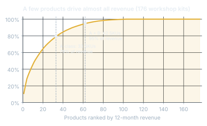

Forecasting and riskClient project
Inventory Optimization for Crafter.com
MSBA capstone for Crafter.com, an online craft-kit company. I was team lead for a team of 4.
Problem
Crafter's system logged out-of-stock months as zero sales. Every forecast built on that history learned to expect too little, so the best sellers kept running out.
Impact
Random Forest won (out-of-sample R² 0.45, MAPE about 12%) and about 6% of hidden A-class demand was recovered. At a $15K budget the buy list funds 49 orders ($14.8K) expected to bring in $56.3K, a 3.8x return. Crafter now runs the whole cycle monthly in under 2 hours.
PythonSQLRandom ForestXGBoostExcel
View details